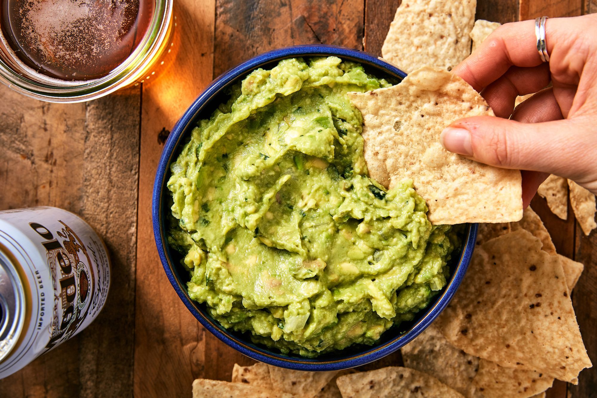

A perfect dip with flavour spice and everything nice!

Guac is a dip that has many uses. A perfect dish to serve during mexican night or super bowl sunday. Perfect for sandwiches and just about anything else.
INGREDIENTS
- 3 Haas avocados, halved, seeded and peeled
- 1 lime, juiced
- 1/2 teaspoon kosher salt
- 1/2 teaspoon ground cumin
- 1/2 teaspoon cayenne
- 1/2 medium onion, diced
- 1/2 jalapeno pepper, seeded and minced
- 2 Roma tomatoes, seeded and diced
- 1 tablespoon chopped cilantro
- 1 clove garlic, minced
STEPS
- Place scooped avocados pulp and lime juice into a large bowl, toss to coat.
- Drain and reserve all the lime juice, after all the avocados have been coated.
- Using potato masher add the salt,cumin and cayenne and mash.
- Fold in onions,tomatoes,cilantro and garlic
- Add 1 tablespoon of reserved lime juice
- Let sit room temp for 1 hour, then serve
NOTES
Guac is one of the best foods for social gatherings, everyone wants to eat better and no one wants to lose the taste. You get that with guac.